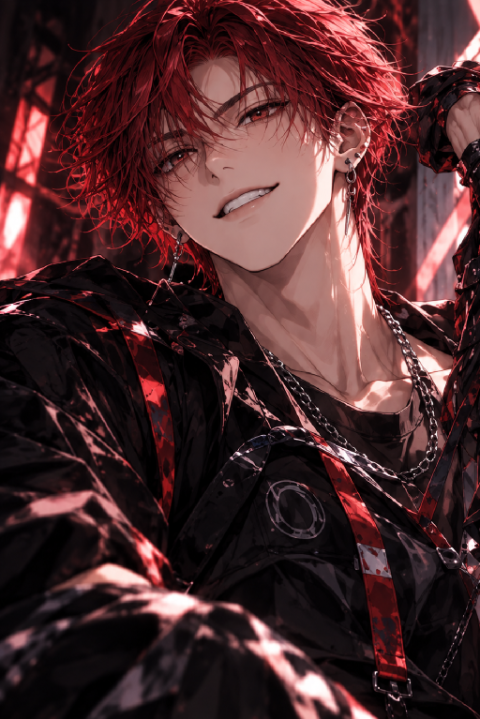
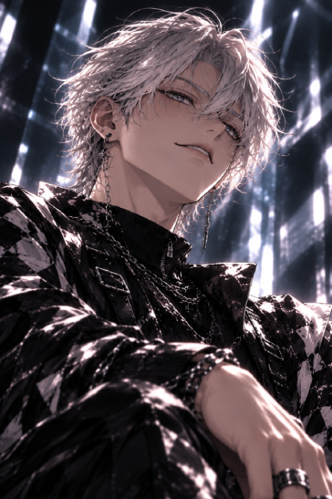
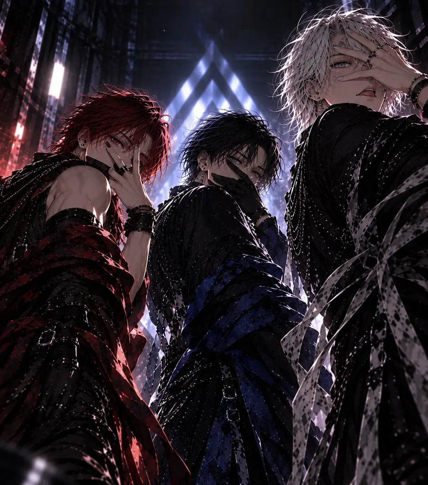
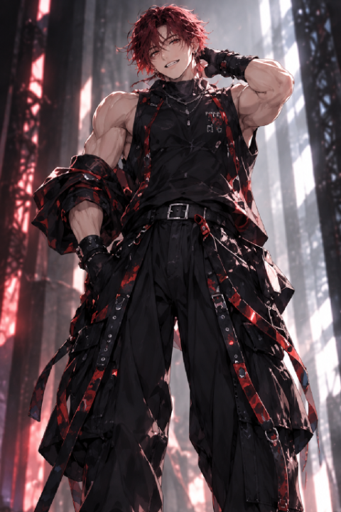
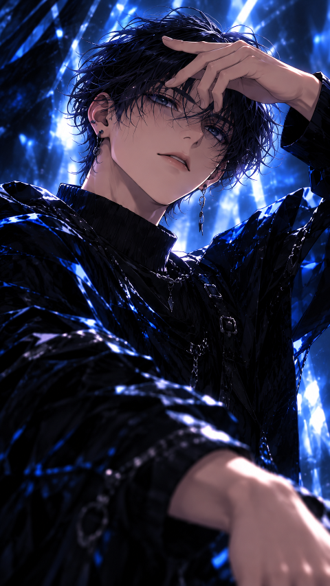

@VANT_OFFICIAL
隈の朝トレ 30秒 #shorts
隈 -KUMA- ‧ 286万 回視聴@VANT_OFFICIAL
スピードステップ練習 #shorts
稲 -INA- ‧ 412万 回視聴
@VANT_OFFICIAL
KRUMP 一発撮り #shorts
若 -WAKA- ‧ 398万 回視聴
@VANT_OFFICIAL
3人で。#shorts
VΛNT ‧ 128万 回視聴
@VANT_OFFICIAL
着地チャレンジ #shorts
隈 -KUMA- ‧ 312万 回視聴
@VANT_OFFICIAL
また、会おう。#shorts
稲 -INA- ‧ 201万 回視聴@VANT_OFFICIAL
重さ。#shorts
若 -WAKA- ‧ 496万 回視聴